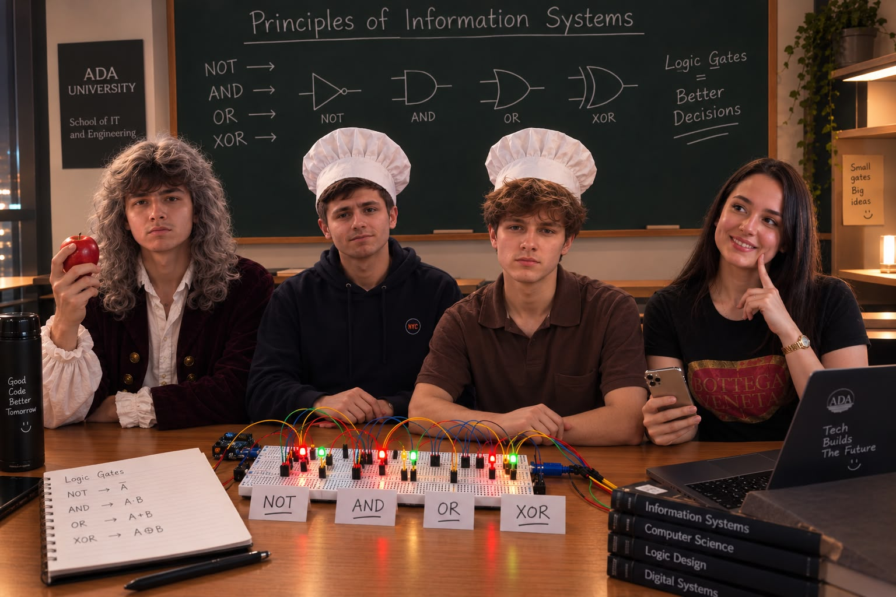

The garage / project log
Projects,
on the grid.
A growing record of the things I build, the systems I explore, and the ideas that make it to the bench.
01PROJECT LOGGED
04LOGIC GATES BUILT

Mission complete / S.I.T.E 1101
Project 1:
Logic gates.
As SİTE students at ADA University, we built NOT, AND, OR, and XOR gates for Project 1 in our SİTE 1101 course, Principles of Information Systems.
¬NOT
∧AND
∨OR
⊕XOR